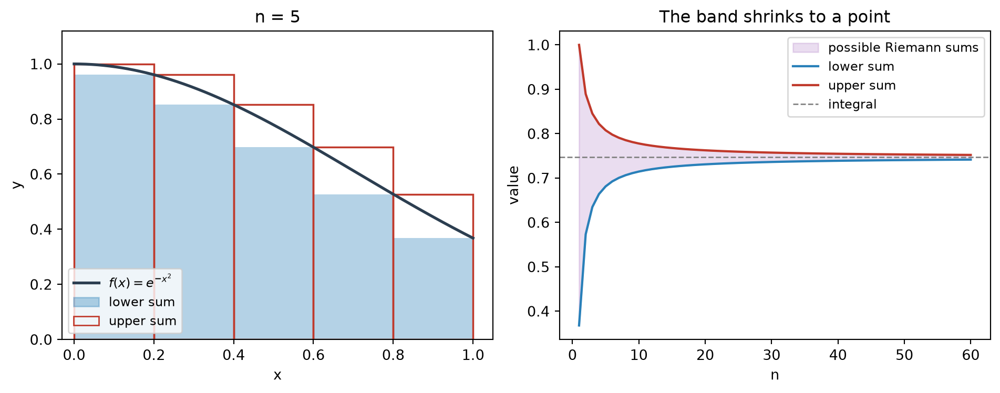
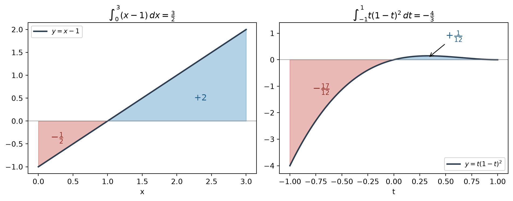
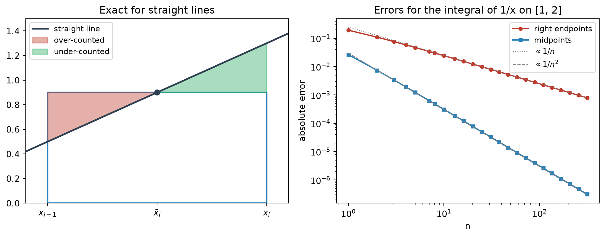
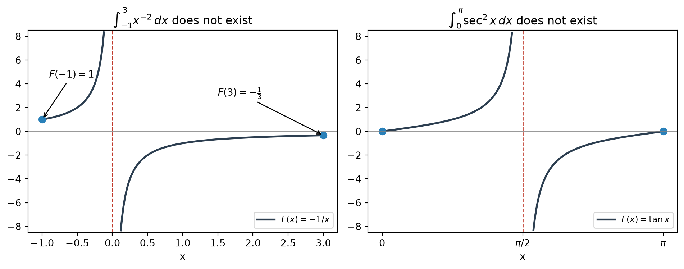

flowchart LR A["Riemann sums<br/>with any sample points"] -->|"limit, uniform in<br/>the sample points"| B["Definite integral"] C["Lower and upper sums<br/>(the band)"] -->|"band width → 0"| B D["Continuous, finitely many jumps,<br/>or monotone"] --> C B --> E["Right-endpoint sums<br/>(exact values)"] B --> F["Midpoint Rule<br/>(approximation)"] B --> G["Properties: linearity,<br/>additivity, comparison"] G -->|"bounds on each piece"| C H["MVT + telescoping"] --> I["Evaluation Theorem<br/>F(b) − F(a)"] B --> I I --> J["Table of antiderivatives"]
Integrals: The Definite Integral and the Evaluation Theorem
The value every Riemann sum agrees on, and an antiderivative that reads it off in one step
This note builds the definite integral from Riemann sums and then shows how to evaluate it without taking limits. The definition asks for more than an ordinary limit: the sums must settle on one value no matter where each subinterval is sampled. Picturing all possible Riemann sums as a band between a lower and an upper sum turns that requirement into a single question, namely whether the band shrinks to a point. The same picture explains which functions are integrable, why the comparison properties hold, and how the Midpoint Rule can be so accurate. The Evaluation Theorem then links integrals to antiderivatives. The Mean Value Theorem turns \(F(b)-F(a)\) into a Riemann sum whose sample points cannot be located, and the “any sample point” clause of the definition is exactly what makes that harmless.
1 The Definite Integral
1.1 Riemann sums
Divide \([a,b]\) into \(n\) subintervals of equal width, \[ \Delta x=\frac{b-a}{n},\qquad x_i=a+i\,\Delta x\quad(i=0,1,\dots,n), \] and choose a sample point \(x_i^*\) in each subinterval \([x_{i-1},x_i]\). The Riemann sum \[ S_n=\sum_{i=1}^n f(x_i^*)\,\Delta x \] adds up the signed areas of rectangles with width \(\Delta x\) and height \(f(x_i^*)\).
ImportantDefinition of the definite integral
For a function \(f\) defined on \([a,b]\), \[ \int_a^b f(x)\,dx=\lim_{n\to\infty}\sum_{i=1}^n f(x_i^*)\,\Delta x, \] provided the limit exists. In that case \(f\) is integrable on \([a,b]\).
1.2 What “the limit exists” means
For a fixed \(n\), \(S_n\) is not one number. Every choice of sample points produces a different sum, so this limit is stronger than the limit of a sequence. It means there is a number \(I\) with \[ \forall\varepsilon>0\ \ \exists N:\quad n>N\ \Longrightarrow\ \Bigl|\sum_{i=1}^n f(x_i^*)\,\Delta x-I\Bigr|<\varepsilon \quad\text{for every choice of } x_i^*\in[x_{i-1},x_i]. \] A single \(N\) has to work for all choices of sample points at once. In words, the limit exists and is the same however the sample points are chosen. This clause does real work later, in the Evaluation Theorem.
1.3 Notation
- \(\int\) is an elongated S, for sum. In \(\int_a^b f(x)\,dx\), \(f(x)\) is the integrand, and \(a\) and \(b\) are the lower and upper limits of integration.
- For now \(dx\) has no meaning on its own. The whole expression \(\int_a^b f(x)\,dx\) is one symbol, and \(dx\) only names the variable. The notation is a reminder of the sum: replace \(\lim\sum\) by \(\int\), \(x_i^*\) by \(x\), and \(\Delta x\) by \(dx\).
- The integral is a number determined by \(f\), \(a\), and \(b\). The variable is a dummy, like the index \(i\) in \(\sum_{i=1}^n i^2\), so \(\int_a^b f(x)\,dx=\int_a^b f(t)\,dt\). A variable survives only when it sits in a limit of integration. For example, \(\int_a^x f(t)\,dt\) is a function of \(x\).
2 Integrability: The Band of Riemann Sums
2.1 Lower and upper sums
Fix \(n\), and let \(m_i\) and \(M_i\) be the infimum and supremum of \(f\) on \([x_{i-1},x_i]\). Since \(m_i\le f(x_i^*)\le M_i\), every Riemann sum lies in a band: \[ \underline{S}_n=\sum_{i=1}^n m_i\,\Delta x\ \le\ S_n\ \le\ \sum_{i=1}^n M_i\,\Delta x=\overline{S}_n . \] Choosing the sample points well pushes \(S_n\) as close as we like to either edge of the band. So “the same limit for every choice of sample points” is equivalent to \[ \overline{S}_n-\underline{S}_n=\sum_{i=1}^n (M_i-m_i)\,\Delta x\ \longrightarrow\ 0 . \] The quantity \(M_i-m_i\) is the oscillation of \(f\) on the \(i\)-th subinterval. Integrability means that the total of oscillation × width vanishes.

2.2 Two ways to fail
| Failure | Example on \([0,1]\) | What happens to the band |
|---|---|---|
| Unbounded | \(f(x)=1/x\) for \(x>0\), \(f(0)=0\) | A sample point near \(0\) makes the single term \(f(x_1^*)\,\Delta x\) as large as we like, so \(\overline{S}_n=\infty\) |
| Too much oscillation | \(D(x)=1\) for rational \(x\), \(D(x)=0\) for irrational \(x\) | Every subinterval contains both kinds of points, so \(M_i-m_i=1\) and the band width stays \(1\) |
For \(D\), choosing only rational sample points gives \(S_n=1\), and choosing only irrational ones gives \(S_n=0\), for every \(n\).
2.3 Sufficient conditions
ImportantIntegrability theorem
If \(f\) is continuous on \([a,b]\), or has only finitely many jump discontinuities there, then \(f\) is integrable on \([a,b]\).
- Continuous functions. On a closed interval, the oscillation shrinks to \(0\) on all subintervals at once as \(\Delta x\to0\); this is uniform continuity. Then \(\overline{S}_n-\underline{S}_n\le\bigl(\max_i(M_i-m_i)\bigr)(b-a)\to0\).
- Finitely many jumps. Both words matter. Jump means the one-sided limits are finite, so \(f\) is bounded, say \(\lvert f\rvert\le B\), and the oscillation on any subinterval is at most \(2B\). Finite means that with \(k\) jumps, at most \(2k\) subintervals contain one (a jump at a partition point touches two subintervals). Their total contribution is at most \(2k\cdot 2B\cdot\Delta x\to0\), and the remaining subintervals behave as in the continuous case. The bad part is bounded height × vanishing total width.
The condition is sufficient but not necessary. Removable discontinuities are harmless by the same argument, and changing \(f\) at finitely many points does not change the integral. More strikingly, monotone functions are integrable even with infinitely many jumps. If \(f\) is decreasing, then \(M_i=f(x_{i-1})\) and \(m_i=f(x_i)\), and the band width telescopes: \[ \overline{S}_n-\underline{S}_n=\sum_{i=1}^n\bigl[f(x_{i-1})-f(x_i)\bigr]\Delta x=\bigl[f(a)-f(b)\bigr]\Delta x\ \longrightarrow\ 0 . \] For example, the increasing step function on \([0,1]\) with \(f(x)=\frac1k\) for \(x\in\bigl(\frac1{k+1},\frac1k\bigr]\) and \(f(0)=0\) jumps at every \(x=\frac12,\frac13,\dots\), and it is still integrable. The exact criterion, due to Lebesgue, is that \(f\) is integrable on \([a,b]\) if and only if it is bounded and its points of discontinuity can be covered by intervals of arbitrarily small total length.
3 Computing Integrals from the Definition
3.1 Right endpoints
ImportantRight-endpoint formula
If \(f\) is integrable on \([a,b]\), then \[ \int_a^b f(x)\,dx=\lim_{n\to\infty}\sum_{i=1}^n f(x_i)\,\Delta x,\qquad \Delta x=\frac{b-a}{n},\quad x_i=a+i\,\Delta x . \]
Integrability guarantees the same limit for every choice of sample points, so we may pick the most convenient one. Because \(x_i\) is linear in \(i\), a polynomial integrand turns the sum into power sums: \[ \sum_{i=1}^n i=\frac{n(n+1)}{2},\qquad \sum_{i=1}^n i^2=\frac{n(n+1)(2n+1)}{6},\qquad \sum_{i=1}^n i^3=\Bigl[\frac{n(n+1)}{2}\Bigr]^2 . \]
Example. For \(\int_0^3(x-1)\,dx\), take \(\Delta x=3/n\) and \(x_i=3i/n\): \[ \sum_{i=1}^n\Bigl(\frac{3i}{n}-1\Bigr)\frac3n=\frac{9}{n^2}\cdot\frac{n(n+1)}{2}-3=\frac92\Bigl(1+\frac1n\Bigr)-3\ \longrightarrow\ \frac32 . \]
WarningThe formula cannot be read backwards
A right-endpoint limit can exist for a function that is not integrable. On \([0,1]\) every right endpoint \(x_i=i/n\) is rational, so every right-endpoint sum of \(D\) equals \(1\) and the limit is \(1\). Yet \(D\) is not integrable. The order is always: first establish integrability (continuity, finitely many jumps, monotonicity), then compute with convenient sample points.
3.2 Recognizing a limit of sums as an integral
Applications build quantities as sums of small pieces \(f(x_i^*)\,\Delta x\), which must then be recognized as integrals. Read off \(\Delta x\) and \(x_i\) to identify \(a\), \(b\), and \(f\). Without the interval, the reading is not unique: \[ \lim_{n\to\infty}\sum_{i=1}^n\Bigl(1+\frac in\Bigr)^2\frac1n=\int_0^1(1+x)^2\,dx=\int_1^2x^2\,dx=\frac73 . \] The first reading uses \(x_i=i/n\) on \([0,1]\), and the second uses \(x_i=1+i/n\) on \([1,2]\). Both give the same value.
4 Net Area
Where \(f<0\), the terms \(f(x_i^*)\,\Delta x\) are negative, so area below the axis is counted with a minus sign: \[ \int_a^b f(x)\,dx=(\text{area above the axis})-(\text{area below the axis}). \]
- \(\int_0^3(x-1)\,dx=2-\frac12=\frac32\), in agreement with the right-endpoint computation. The total shaded area is \(\int_0^3\lvert x-1\rvert\,dx=\frac52\).
- \(\int_{-1}^{1}t(1-t)^2\,dt=\frac1{12}-\frac{17}{12}=-\frac43\). A sketch predicts the sign before any computation.

5 The Midpoint Rule
ImportantMidpoint Rule
\[ \int_a^b f(x)\,dx\approx\sum_{i=1}^n f(\bar x_i)\,\Delta x=\Delta x\bigl[f(\bar x_1)+\cdots+f(\bar x_n)\bigr],\qquad \bar x_i=\tfrac12(x_{i-1}+x_i). \]
Right endpoints are convenient for computing limits exactly. For approximating with a fixed \(n\), midpoints are far better.
5.1 Exact for straight lines
Under a straight line, each strip is a trapezoid, and its area equals the area of the midpoint rectangle: \[ \Delta x\cdot\frac{f(x_{i-1})+f(x_i)}{2}=\Delta x\cdot f(\bar x_i). \] The line passes through \((\bar x_i,f(\bar x_i))\), so the triangle the rectangle over-counts on one side equals the triangle it under-counts on the other. A right-endpoint rectangle under a line of slope \(\alpha\) is off by \(\frac12\alpha(\Delta x)^2\) in every strip, so the total error is \(\frac12\alpha(b-a)\,\Delta x\), proportional to \(1/n\).
5.2 Only curvature is left
On a short strip, a smooth function looks like its tangent line plus a small bend. Midpoints cancel the error coming from the slope and leave only the error coming from the bending (\(f''\)), so the total error is proportional to \(1/n^2\). The standard bound is \[ \lvert E_M\rvert\le\frac{K(b-a)^3}{24n^2}\qquad\text{when } \lvert f''(x)\rvert\le K \text{ on } [a,b]. \]
For \(\int_1^2\frac{dx}{x}=\ln2\approx0.693147\):
| \(n\) | Left | Right | Midpoint | Right error | Midpoint error |
|---|---|---|---|---|---|
| 5 | 0.745635 | 0.645635 | 0.691908 | 0.0475 | 0.00124 |
| 10 | 0.718771 | 0.668771 | 0.692835 | 0.0244 | 0.000312 |
| 20 | 0.705803 | 0.680803 | 0.693069 | 0.0123 | 0.0000781 |
Doubling \(n\) halves the endpoint error and quarters the midpoint error. Since \(1/x\) is decreasing, the right sums are the lower sums and the left sums are the upper sums. Their gap is \([f(1)-f(2)]\,\Delta x=0.5\,\Delta x\), exactly the telescoping width from the band picture.

5.3 Concavity decides the direction
Because the Midpoint Rule is exact for lines, the midpoint rectangle on each strip has the same area as the region under the tangent line at \(\bar x_i\). A concave-up curve lies above its tangent lines and below its chords. Comparing areas strip by strip gives \[ \sum_{i=1}^n f(\bar x_i)\,\Delta x\ \le\ \int_a^b f(x)\,dx\ \le\ \sum_{i=1}^n\frac{f(x_{i-1})+f(x_i)}{2}\,\Delta x \qquad(f\text{ concave up}), \] and the inequalities reverse when \(f\) is concave down. The midpoint value \(0.691908<\ln2\) in the table is an instance. Even \(n=1\) gives a useful check. Since \(f(y)=(1+2y)^2\) is concave up, \[ 16=f(1.5)\ \le\ \int_1^2(1+2y)^2\,dy\ \le\ \frac{f(1)+f(2)}{2}=17, \] and the exact value \(\frac{49}{3}\approx16.33\) lies inside.
6 Properties of the Integral
6.1 Orientation and algebraic properties
By convention, \[ \int_b^a f(x)\,dx=-\int_a^b f(x)\,dx,\qquad \int_a^a f(x)\,dx=0 . \]
| Property | Statement |
|---|---|
| Constant | \(\int_a^b c\,dx=c\,(b-a)\) |
| Linearity | \(\int_a^b(f\pm g)\,dx=\int_a^b f\,dx\pm\int_a^b g\,dx\) and \(\int_a^b cf\,dx=c\int_a^b f\,dx\) |
| Additivity | \(\int_a^c f\,dx+\int_c^b f\,dx=\int_a^b f\,dx\) |
These hold for any order of \(a\), \(b\), \(c\). The orientation convention is exactly what additivity demands: replacing \((c,b)\) by \((b,a)\) gives \(\int_a^b f+\int_b^a f=\int_a^a f=0\). In terms of the definition, running from \(b\) to \(a\) makes \(\Delta x=(a-b)/n\) negative.
For example, if \(\int_0^{10}f(x)\,dx=17\) and \(\int_0^8f(x)\,dx=12\), additivity gives \(\int_8^{10}f(x)\,dx=17-12=5\).
6.2 Comparison properties
These require \(a\le b\).
| Property | Statement |
|---|---|
| Positivity | \(f\ge0\) on \([a,b]\) \(\Rightarrow\) \(\int_a^b f\,dx\ge0\) |
| Monotonicity | \(f\ge g\) on \([a,b]\) \(\Rightarrow\) \(\int_a^b f\,dx\ge\int_a^b g\,dx\) |
| Bounds | \(m\le f\le M\) on \([a,b]\) \(\Rightarrow\) \(m(b-a)\le\int_a^b f\,dx\le M(b-a)\) |
Each one follows from the previous one. Positivity holds because every term of a Riemann sum is nonnegative and limits preserve \(\ge\). Monotonicity is positivity applied to \(f-g\), combined with linearity. The bounds are monotonicity applied twice, combined with the constant rule. If \(f\) is continuous, \(m\) and \(M\) can be taken as its absolute minimum and maximum, and the area under the curve is squeezed between rectangles of heights \(m\) and \(M\). For \(a>b\), the negative \(\Delta x\) flips the inequalities; for example, \(1\ge0\) but \(\int_1^0 1\,dx=-1\).
Note\(\ge\), not \(>\)
Limits preserve \(\ge\) but not \(>\). On \([0,1]\), the function equal to \(1\) at \(x=\frac12\) and \(0\) elsewhere is nonnegative and not identically zero, yet its integral is \(0\). For a continuous \(f\ge0\) that is positive somewhere, the integral is positive. When positivity is too weak to expose an error, the bounds property often is not.
6.3 The band, revisited
Apply the bounds property on each subinterval, with \(m_i\) and \(M_i\), and add the pieces with additivity: \[ \underline{S}_n=\sum_{i=1}^n m_i\,\Delta x\ \le\ \int_a^b f(x)\,dx\ \le\ \sum_{i=1}^n M_i\,\Delta x=\overline{S}_n . \] The crude bound \(m(b-a)\le\int_a^b f\,dx\le M(b-a)\) is the case \(n=1\). For \(f(x)=e^{-x^2}\) on \([0,1]\), which is decreasing, the lower sums are right sums, the upper sums are left sums, and the width is \((1-e^{-1})/n\):
| \(n\) | Lower sum | Upper sum | Width |
|---|---|---|---|
| 1 | 0.367879 | 1.000000 | 0.632 |
| 2 | 0.573340 | 0.889400 | 0.316 |
| 10 | 0.714605 | 0.777817 | 0.0632 |
| 100 | 0.743657 | 0.749979 | 0.00632 |
The bands close in on \(\int_0^1e^{-x^2}\,dx\approx0.746824\). This function has no elementary antiderivative, so estimates like these are genuinely needed.
6.4 Symmetry
Reflecting an interval through \(0\) replaces \(f(x)\) by \(f(-x)\): \[ \int_{-a}^{0}f(x)\,dx=\int_0^{a}f(-x)\,dx . \] The subinterval \([x_{i-1},x_i]\subset[-a,0]\) corresponds to \([-x_i,-x_{i-1}]\subset[0,a]\) with the same width, so the two Riemann sums agree term by term. Splitting \([-a,a]\) at \(0\) then gives \[ \int_{-a}^{a}f(x)\,dx=\int_0^a\bigl[f(-x)+f(x)\bigr]\,dx= \begin{cases} 0, & f\text{ odd},\\[2pt] 2\displaystyle\int_0^a f(x)\,dx, & f\text{ even}. \end{cases} \] For instance, in \(\int_{-1}^{1}(t^3-2t^2+t)\,dt\) the odd terms vanish, and the answer is \(-2\cdot2\int_0^1t^2\,dt=-\frac43\).
7 Indefinite Integrals and the Evaluation Theorem
7.1 Indefinite integrals
\[ \int f(x)\,dx=F(x)\quad\Longleftrightarrow\quad F'(x)=f(x). \] The indefinite integral is notation for an antiderivative. By itself it has nothing to do with Riemann sums; the shared symbol is justified by the theorem below. A definite integral is a number, while an indefinite integral is a function, or a family of functions.
7.2 The Evaluation Theorem
ImportantEvaluation Theorem
If \(f\) is continuous on \([a,b]\) and \(F'=f\), then \[ \int_a^b f(x)\,dx=F(b)-F(a)=\Bigl[\int f(x)\,dx\Bigr]_a^b . \]
Any antiderivative works, because the constant cancels: \([F(x)+C]_a^b=F(b)-F(a)\).
7.3 Why it works: the MVT meets “any sample point”
Telescope \(F(b)-F(a)\) over the subintervals and apply the Mean Value Theorem on each one: \[ F(b)-F(a)=\sum_{i=1}^n\bigl[F(x_i)-F(x_{i-1})\bigr]=\sum_{i=1}^n F'(x_i^*)\,\Delta x=\sum_{i=1}^n f(x_i^*)\,\Delta x . \] So for every \(n\), \(F(b)-F(a)\) is exactly a Riemann sum, with sample points \(x_i^*\) supplied by the MVT. Those points cannot be located, and they do not need to be. Since \(f\) is continuous, it is integrable, and every choice of sample points leads to the same limit. In band language, \(F(b)-F(a)\) lies in every band \([\underline{S}_n,\overline{S}_n]\), and the bands shrink to the integral. Continuity is used only to secure integrability.
Two earlier results now take one line each: \[ \int_0^3(x-1)\,dx=\Bigl[\frac{x^2}{2}-x\Bigr]_0^3=\frac32,\qquad \int_1^2\frac{dx}{x}=\bigl[\ln\lvert x\rvert\bigr]_1^2=\ln2\approx0.693147 . \]
7.4 The constant \(C\) and the interval convention
If \(F'=G'=f\) on an interval, then \((G-F)'=0\) there. The MVT on any \([x_1,x_2]\) inside the interval gives \((G-F)(x_2)=(G-F)(x_1)\), so \(G-F\) is constant. The MVT needs all of \([x_1,x_2]\) inside the domain, and this is where the interval matters. On a domain with a gap, each piece gets its own constant. For \(x\neq0\), the general antiderivative of \(1/x\) is \[ F(x)=\begin{cases}\ln\lvert x\rvert+C_1, & x>0,\\ \ln\lvert x\rvert+C_2, & x<0,\end{cases} \] with \(C_1\) and \(C_2\) independent. Hence the convention: a formula for a general indefinite integral is valid only on an interval. The function \(\ln\lvert x\rvert\) works on both sides because \(\frac{d}{dx}\ln(-x)=\frac{-1}{-x}=\frac1x\) for \(x<0\).
Two readings. \(\int f(x)\,dx\) can denote one particular antiderivative or the whole family \(\{F+C\}\). The difference shows up in \(\int cf(x)\,dx=c\int f(x)\,dx\). Read as families, the rule fails for \(c=0\): the left side is every constant function, while the right side is only \(0\). For that reason the rule is often stated with \(c\neq0\).
8 Table of Antiderivatives
Linearity carries over: \(\int[f(x)+g(x)]\,dx=\int f(x)\,dx+\int g(x)\,dx\) and \(\int cf(x)\,dx=c\int f(x)\,dx\). Every formula below is verified by differentiating the right-hand side. Verification is mechanical, but finding an antiderivative is not, and some functions such as \(e^{-x^2}\) have no elementary antiderivative at all.
| Integral | Result | Valid on |
|---|---|---|
| \(\int x^n\,dx\) | \(\dfrac{x^{n+1}}{n+1}+C\) | \(n\neq-1\); intervals where \(x^n\) is defined |
| \(\int\dfrac{dx}{x}\) | \(\ln\lvert x\rvert+C\) | intervals not containing \(0\) |
| \(\int e^x\,dx\) | \(e^x+C\) | all \(x\) |
| \(\int a^x\,dx\) | \(\dfrac{a^x}{\ln a}+C\) | all \(x\); \(a>0\), \(a\neq1\) |
| \(\int\sin x\,dx\) | \(-\cos x+C\) | all \(x\) |
| \(\int\cos x\,dx\) | \(\sin x+C\) | all \(x\) |
| \(\int\sec^2x\,dx\) | \(\tan x+C\) | intervals avoiding \(\frac\pi2+k\pi\) |
| \(\int\csc^2x\,dx\) | \(-\cot x+C\) | intervals avoiding \(k\pi\) |
| \(\int\sec x\tan x\,dx\) | \(\sec x+C\) | intervals avoiding \(\frac\pi2+k\pi\) |
| \(\int\csc x\cot x\,dx\) | \(-\csc x+C\) | intervals avoiding \(k\pi\) |
| \(\int\dfrac{dx}{x^2+1}\) | \(\tan^{-1}x+C\) | all \(x\) |
| \(\int\dfrac{dx}{\sqrt{1-x^2}}\) | \(\sin^{-1}x+C\) | \(-1<x<1\) |
8.1 The holes in the table are limits
Power rule at \(n=-1\). For \(x>0\), choose the constant so that the antiderivative of \(x^n\) vanishes at \(x=1\). As \(n\to-1\) this is of type \(\frac00\), and l’Hospital’s Rule in the variable \(n\) gives \[ \lim_{n\to-1}\frac{x^{n+1}-1}{n+1}=\lim_{n\to-1}\frac{x^{n+1}\ln x}{1}=\ln x . \] So \(\ln x\) is the continuous continuation of the power-rule antiderivatives. The continuity becomes visible only after choosing \(C\) well, because \(\frac{x^{n+1}}{n+1}\) on its own blows up as \(n\to-1\).
Exponential rule at \(a=1\). In the same way, \(\dfrac{a^x-1}{\ln a}\to x\) as \(a\to1\), which matches \(\int1\,dx=x+C\).
8.2 Trigonometric entries
The six trigonometric formulas are three derivative pairs read backwards:
| \(F(x)\) | \(F'(x)\) |
|---|---|
| \(\sin x\) | \(\cos x\) |
| \(\cos x\) | \(-\sin x\) |
| \(\tan x\) | \(\sec^2x\) |
| \(\cot x\) | \(-\csc^2x\) |
| \(\sec x\) | \(\sec x\tan x\) |
| \(\csc x\) | \(-\csc x\cot x\) |
Only the co-functions carry a minus sign, and there is one reason for it. Each co-function is its partner evaluated at \(\frac\pi2-x\): \(\cos x=\sin(\frac\pi2-x)\), \(\cot x=\tan(\frac\pi2-x)\), and \(\csc x=\sec(\frac\pi2-x)\). By the chain rule, \(\frac{d}{dx}g(\frac\pi2-x)=-g'(\frac\pi2-x)\). For example, \[ (\cot x)'=-\sec^2\!\Bigl(\frac\pi2-x\Bigr)=-\csc^2x,\qquad (\csc x)'=-\sec\Bigl(\frac\pi2-x\Bigr)\tan\Bigl(\frac\pi2-x\Bigr)=-\csc x\cot x . \]
8.3 Inverse trigonometric entries
The range of the inverse function fixes the sign of the derivative.
- \(y=\tan^{-1}x\) with \(-\frac\pi2<y<\frac\pi2\): differentiating \(\tan y=x\) gives \(\sec^2y\cdot y'=1\), so \(y'=\dfrac{1}{1+\tan^2y}=\dfrac1{1+x^2}\) for all \(x\). For example, \(\int_0^1\frac{dx}{1+x^2}=\frac\pi4\).
- \(y=\sin^{-1}x\) with \(-\frac\pi2\le y\le\frac\pi2\): differentiating \(\sin y=x\) gives \(\cos y\cdot y'=1\). On this range \(\cos y\ge0\), so \(\cos y=\sqrt{1-x^2}\) and \(y'=\dfrac1{\sqrt{1-x^2}}\) for \(-1<x<1\).
- There is no separate \(\cos^{-1}\) entry. With range \([0,\pi]\), \(\sin y\ge0\), and the same computation gives \((\cos^{-1}x)'=-\frac1{\sqrt{1-x^2}}\). So \(-\cos^{-1}x\) is also an antiderivative of \(\frac1{\sqrt{1-x^2}}\). Since \(\sin^{-1}x+\cos^{-1}x=\frac\pi2\), it equals \(\sin^{-1}x-\frac\pi2\) and belongs to the same family.
9 Summary
| Idea | Core message |
|---|---|
| Definite integral | Limit of Riemann sums, uniform in the choice of sample points |
| Integrability | The band \([\underline{S}_n,\overline{S}_n]\) shrinks to a single point |
| Right-endpoint formula | Once integrability is known, use the most convenient sample points |
| Net area | Area below the axis counts negatively |
| Midpoint Rule | Exact for lines; error \(\propto 1/n^2\); concavity decides its direction |
| Comparison properties | Bounds on each subinterval add up to the band |
| Evaluation Theorem | The MVT makes \(F(b)-F(a)\) a Riemann sum; integrability makes it the integral |
| Indefinite integral | A family \(F+C\), valid on an interval |
10 Common Pitfalls
- Reflecting an interval is not reversing it. In general \(\int_{-a}^{0}f(x)\,dx\neq\int_0^a[-f(x)]\,dx\). Reversing keeps the endpoints, \(\int_{-a}^0f\,dx=-\int_0^{-a}f\,dx\), while moving to \([0,a]\) is a reflection, \(\int_0^af(-x)\,dx\). The two agree only for odd \(f\). In \(\int_{-2}^0(u^5-u^3+u^2)\,du=-4\), the wrong rule handles the odd part correctly and misses the even part \(u^2\) by \(2\int_0^2u^2\,du=\frac{16}3\). The safest route is to evaluate \(F(0)-F(-a)\) directly, with parentheses.
- Multiplying by \(n+1\) instead of dividing. \(\int x^{1/3}\,dx=\frac{x^{4/3}}{4/3}=\frac34x^{4/3}\), not \(\frac43x^{4/3}\). Differentiating the wrong version gives \(\frac{16}9x^{1/3}\).
- Integrating before simplifying. Expand or divide first: \(x(\sqrt[3]{x}+\sqrt[4]{x})=x^{4/3}+x^{5/4}\), \(\frac{v^3+3v^6}{v^4}=\frac1v+3v^2\), \(\frac{1+\cos^2\theta}{\cos^2\theta}=\sec^2\theta+1\), and \(\frac{\sin\theta+\sin\theta\tan^2\theta}{\sec^2\theta}=\sin\theta\).
- Dropping part of \(F(b)-F(a)\). Write both values in full: \([\ln v+v^3]_1^2=(\ln2+8)-(0+1)=\ln2+7\). The fact \(\ln1=0\) removes only the logarithmic term at the lower limit.
- Applying \(F(b)-F(a)\) across a blow-up. The computation \(\int_{-1}^3\frac{dx}{x^2}\overset{?}{=}\bigl[-\frac1x\bigr]_{-1}^3=-\frac43\) is wrong. The integrand is unbounded near \(0\), \(-\frac1x\) is an antiderivative only on \((-\infty,0)\) and \((0,\infty)\), and a positive integrand cannot have a negative integral. On a subinterval straddling \(0\), \(F(x_j)-F(x_{j-1})<0\) while every \(f(x^*)\,\Delta x>0\), so the MVT step of the Evaluation Theorem fails. The integral does not exist; as an improper integral it diverges to \(\infty\). Likewise \(\int_0^\pi\sec^2x\,dx\overset{?}{=}[\tan x]_0^\pi=0\) fails at \(\frac\pi2\). Positivity alone does not catch this one, since \(0\ge0\), but \(\sec^2x\ge1\) would force a value of at least \(\pi\).
- Cancelling without checking the interval. \(\frac{t^2-1}{t^4-1}=\frac1{t^2+1}\) holds only for \(t\neq\pm1\). It is safe on \([0,\frac1{\sqrt3}]\) because that interval avoids \(\pm1\).
- Absolute values. Split at the corner with additivity: \(\int_0^2\lvert 2x-1\rvert\,dx=\int_0^{1/2}(1-2x)\,dx+\int_{1/2}^2(2x-1)\,dx=\frac14+\frac94=\frac52\).
- Constant integrands. \(\int_{-5}^5e\,dx=10e\), because here \(e\) is a number, not \(e^x\).

11 Self-Check Toolkit
| Check | What it catches |
|---|---|
| Sign of the integrand | A negative answer for a positive integrand, and vice versa |
| Bounds \(m(b-a)\le\int_a^b f\,dx\le M(b-a)\) | Coefficient errors, e.g. \(\int_0^1x^{4/5}\,dx=\frac95\) exceeds the bound \(1\) |
| Comparison with a simpler function | \(\int_0^1x^{4/3}\,dx\le\int_0^1x\,dx=\frac12\) rules out \(\frac34\) |
| Concavity sandwich (midpoint and chord) | Evaluation slips that the bounds miss |
| Differentiate the antiderivative | Wrong coefficients and signs |
| Continuity on all of \([a,b]\) | Illegal use of \(F(b)-F(a)\) across a blow-up |
| Odd and even parts on \([-a,a]\) | Sign errors on symmetric intervals |
TipA routine for definite integrals
- Check that the integrand is continuous on all of \([a,b]\).
- Simplify the integrand: expand, divide, use identities, split at corners.
- Find an antiderivative from the table and differentiate it once to confirm.
- Write \(F(b)-F(a)\) with both values in full parentheses.
- Compare the result with the sign, the bounds, and, if needed, the concavity sandwich.